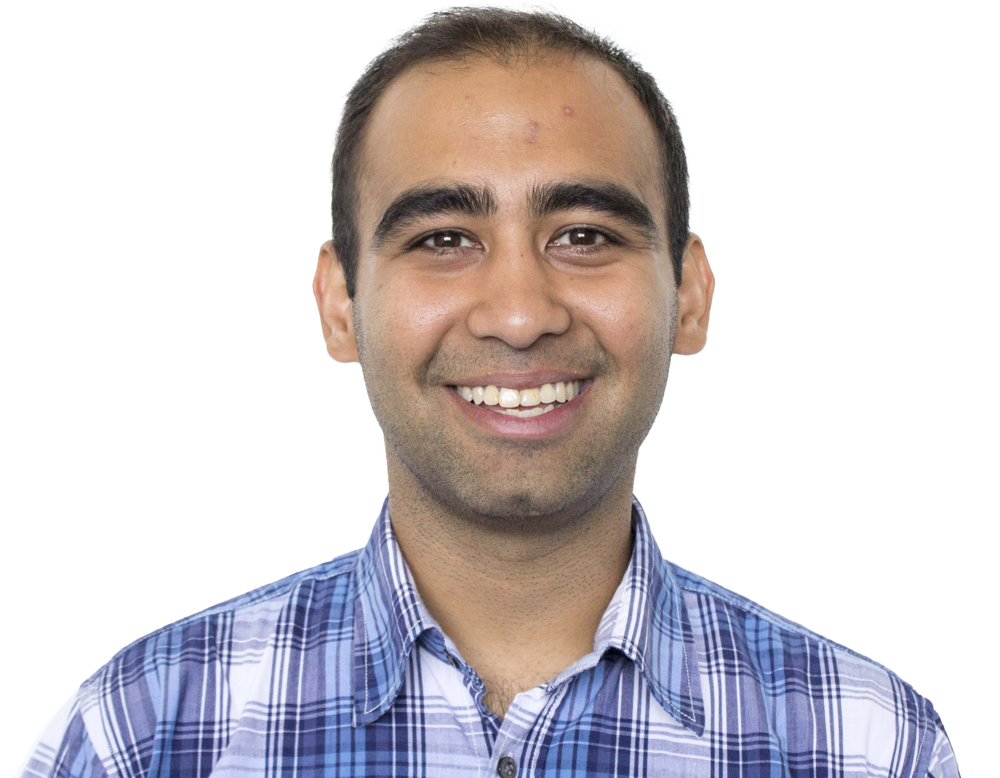

Avneesh Singh Saluja  I am currently a Research Scientist at Netflix, where I work on multimodal machine learning.
(CV) (Google Scholar) (Github) (Linkedin)
I completed my Ph.D. from the Electrical and Computer Engineering (ECE) Department at Carnegie Mellon University (CMU), affiliated with the Language Technologies Institute (LTI) in the School of Computer Science, and Carnegie Mellon Silicon Valley (CMU-SV). My thesis was on low-dimensional context-dependent translation models in statistical machine translation, and my advisors were Professors Chris Dyer and Ian Lane. I have also worked closely with Joy (Ying) Zhang.
I received a B.Sc. (with Distinction) from the Electrical Engineering Department at Stanford University in 2007.
In a previous avatar, I worked as an Analyst for the Structured Equity Solutions (SES) Group at Goldman Sachs in both New York and Hong Kong (2007-2009). I was also a Product Manager at July Systems in Bangalore, India (2009-2010), where the product that I launched and managed won the "Best Mobile International" category at the 2010 Mobile Excellence Awards.
Before Netflix, I was a Research Scientist at Airbnb, where I was a founding member of the AI Lab.
Last updated: April 2025